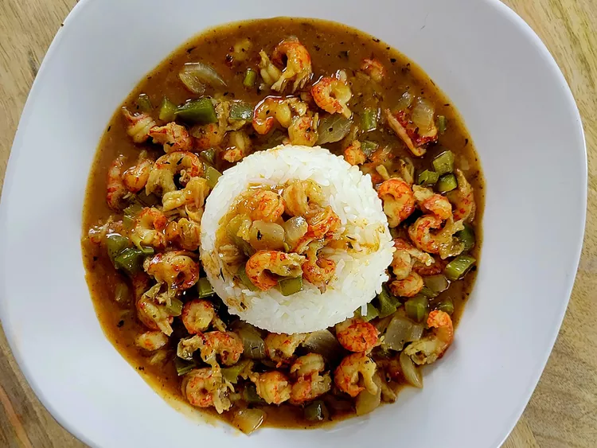

Crawfish Etouffee

Description
This Louisiana dish is similar to gumbo, but has a thicker, gravy-type base. This dish makes use of "smothering", a popular method of cooking in both the Cajun and Creole areas of Southwest Louisiana. Serve over rice for a complete meal.
Crawfish etouffee is the most popular version of an etouffee. Variations of this dish are made with other shellfish such as crab and shrimp.
Ingredients
- 5 tablespoons butter
- 5 tablespoons all-purpose flour
- 1 yellow onion, chopped
- 1 green bell pepper, chopped
- 2 stalks celery, chopped
- 4 cloves garlic, chopped
- 2 tablespoons Cajun seasoning, divided, or to taste
- 1 teaspoon cayenne pepper (optional)
- 2 cups fish stock
- salt and ground black pepper to taste
- 1 pound cooked crawfish tail meat
Steps
- Melt butter in a Dutch oven over medium heat. Stir in flour to make the roux, and stir continuously until roux is at least the color of peanut butter, about 10 minutes, or for a darker roux, 15 to 20 minutes.
- Add onions, bell pepper, celery, and garlic; cook and stir for 5 to 7 minutes. Stir in half the Cajun seasoning, cayenne pepper, and stock. Season with salt and ground black pepper. Reduce heat to low and simmer for 15 minutes.
- Stir in crawfish, turn heat off, and cover. Let stand until crawfish are heated through. Taste and add remaining half of Cajun seasoning, if needed.
Notes
Chicken stock can be substituted for fish stock, and vegetable oil in place of butter.
The base of this dish is thicker than gumbo. If it is too thin, mix 2 tablespoons cornstarch with a few drops water, stir well, and add to thicken.
Return to Homepage